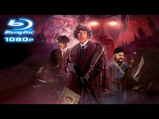
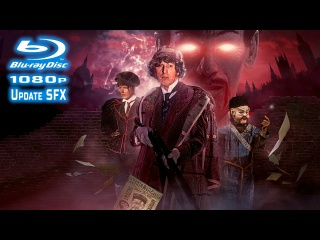
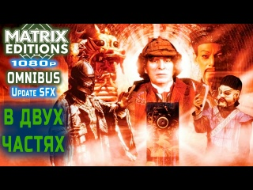
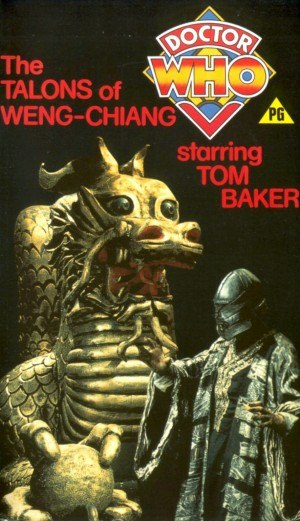
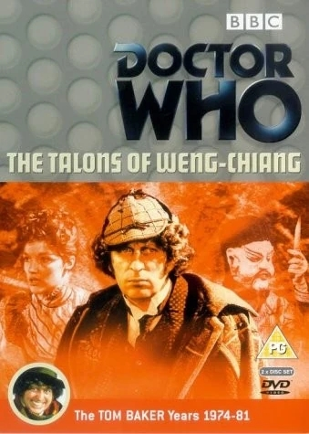
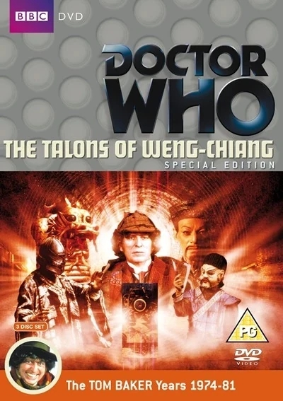
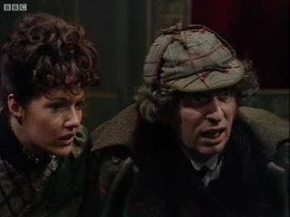

Субтитры: Русские и Английские |  |
|---|---|
с обновленными спецэффектами (2010) Субтитры: Русские и Английские |  |
с обновлением визуальных эффектов (cunningmunki) Субтитры: отсутствуют |  |
The Talons of Weng-Chiang
Дата выхода: 26 февраля - 2 апреля 1977
Формат: 6 эпизодов по 25 мин.
|
ТАРДИС материализуется в викторианском Лондоне, где в тумане Финсбери-парка исчезают молодые женщины, а в театре «Палас» загадочный маг Ли Сен-Хэн собирает аншлаги. Доктор и Лила погружаются в мир газовых фонарей, китайских триад и театральных подмостков, где за маской шоу скрывается охота на ключи времени. Истинный виновник — Магнус Грил, военный преступник из LI века, сбежавший в прошлое и маскирующийся под мифического божество Венг-Чанга. Серия вобрала в себя всё лучшее из викторианского нуара и готического хоррора, а профессор Лайтфут и джентльмен-сыщик Джаггерсон подарили сериалу один из самых обаятельных второстепенных ансамблей.
 VHS - ноябрь 1988 |  DVD - 28 апреля 2003 |
|---|---|
  DVD-SE+Boxset - 4 октября 2010 |  Blu-ray - 4 мая 2020 * Версия в нашей группе |

